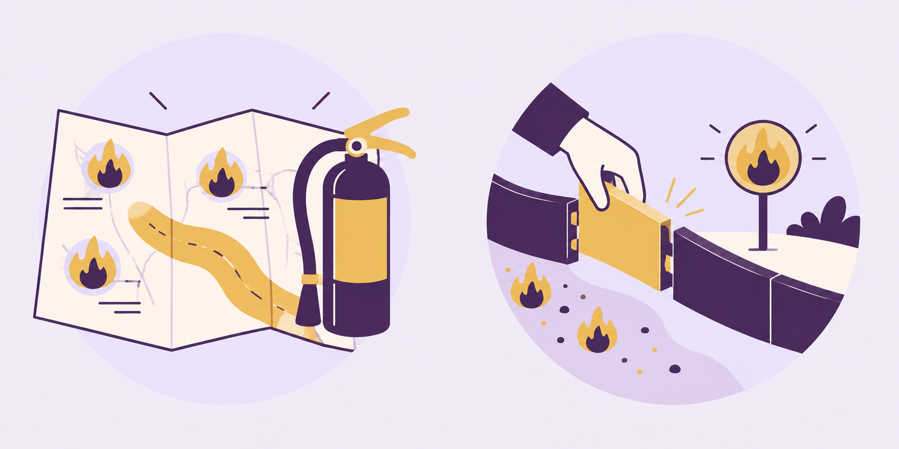
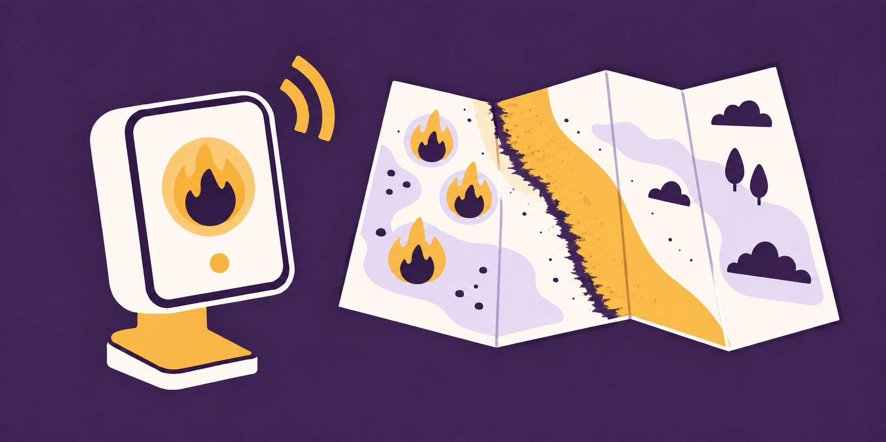

Sales
Promised the feature to win the deal.
For the CEO asking, “What do we actually do with AI?”
Asqend connects what your team knows, follows what happens next, and brings the gaps to your attention. I help you act on what it finds and build the systems your business needs.
A free 30-minute conversation with Spencer.
Multi-exit founder and CEO turned obsessive AI builder.
The problem
Now you’re piecing together what was promised, what happened, and who was supposed to own it.
The signs were there all along
Promised the feature to win the deal.
Kept the customer going with a workaround.
Agreed to look into it. Never put it on the roadmap.
Everyone had a piece of the story.
No one owned getting it resolved.
The approach
Connect Asqend
We connect the agreed meeting history from your previous 30 days. Asqend looks across the conversations to surface growing problems and where they keep showing up.
Commitments. Risks. Recurring problems.
Review with me

We review what Asqend finds across your business. Together, we decide where to focus, what needs to change, and which AI systems are worth building.
You keep the report and prioritized recommendations.
Optional ongoing

As new conversations happen, Asqend brings growing problems to your attention. I work hands-on with you and your team to build AI solutions that address what keeps causing them.
Optional ongoing work, agreed after the first review.
Why work with me?
I’ve built and exited companies. I know the startup chaos firsthand—the problems that land on your desk, the fires you have to step into, and the things that keep coming back because the underlying problem never gets fixed.
That’s the experience I bring to your business. Understanding what you’re trying to achieve, figuring out where AI can make a meaningful difference, and working alongside you to build it.
I’ve also built AI systems across sales, customer success and operations. We can take the things worth doing all the way from an idea to something your team actually uses.
More about Spencer“I want to understand what you’re trying to build, help you figure out what will move the business forward, and be there to help make it happen.”
Start here · The look-back
A report on what needs attention, a walkthrough with me, and prioritized recommendations you keep.
$1,000 one-time look-back
You decide whether the readout was useful.
Free 30-minute call first.
Book a free 30-minute callWe agree scope, sources and a readout date before payment or connection. Ongoing Asqend and custom builds are optional, separately scoped and priced.
You keep the report and prioritized recommendations whether or not we continue. You can continue with Asqend to keep the context current and follow what happens next, and work with me on what needs attention.
We discuss likely ongoing costs before you pay for the look-back. Ongoing Asqend and custom builds are separately scoped and priced, and we agree the work before it starts. There’s no automatic subscription or retainer.
Keep using them. Asqend adds the business context. You can also connect through MCP to access Asqend information in ChatGPT, Claude or another compatible AI assistant.
Both. Asqend is the product; I’m hands-on in the work. Asqend connects context across business conversations and follows what happens next. I help you and your team interpret what it surfaces, decide what matters, and build useful AI systems where they can address recurring problems.
The $1,000 look-back is the starting engagement. Ongoing Asqend and custom builds are scoped and priced separately.
No. If you don’t get a useful insight, you get your $1,000 back. You decide whether the readout was useful.
The last 30 days often reveal how much is happening outside your view, and how much there is to improve.
An agreed set of recent meeting history, a decision-maker who can act on useful findings, and time for the walkthrough. We confirm the connection or export path and the readout date on the first call, before payment.
A free 30-minute conversation with Spencer.